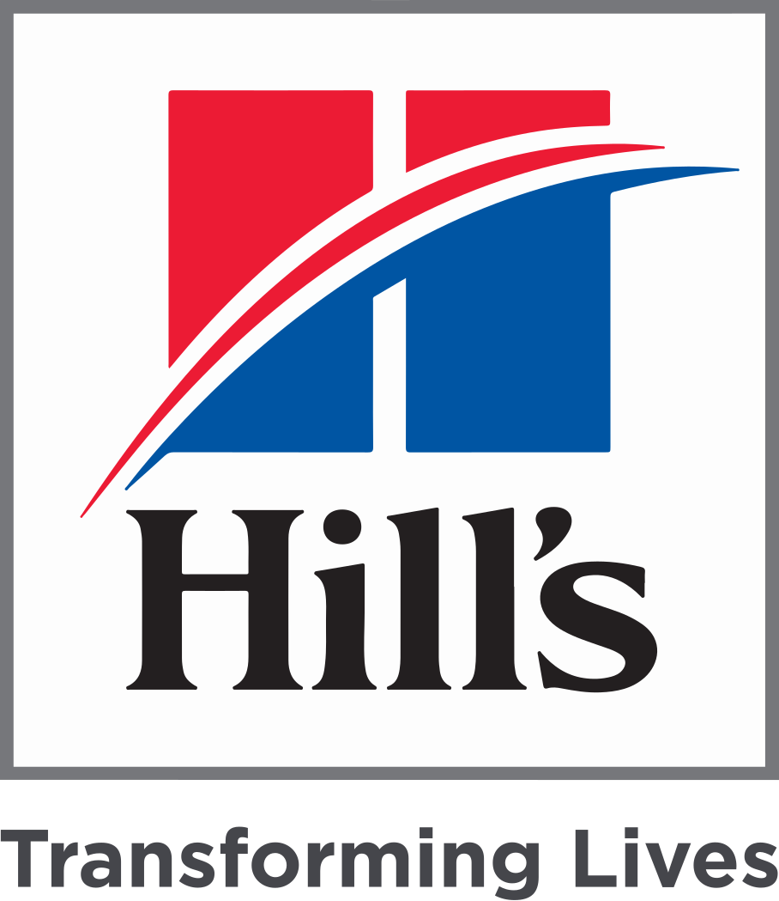
Cargando ...
Haga clic en cualquier lugar para comenzar.
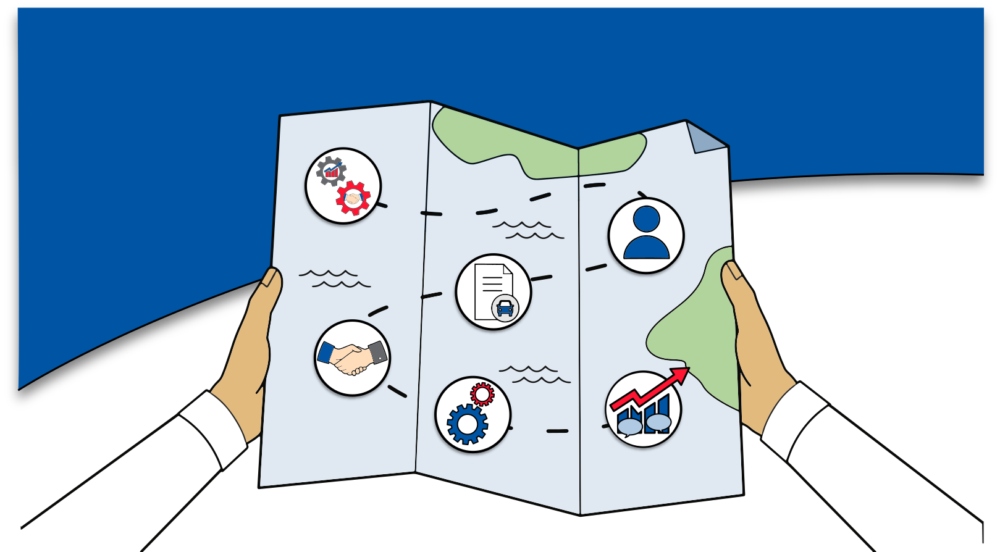
Este curso aborda la gestión y el desarrollo de clientes, y la importancia de equilibrar ambos.
Este curso aborda la comprensión de las responsabilidades de TM, de los perfiles del cliente y del canal de mascotas y veterinarios que conforman el ambiente de venta minorista.
Este curso aborda cómo el análisis, la planificación y la ejecución pueden ayudarnos a alcanzar nuestras metas, como parte del modelo APE.
Este curso aborda la importancia de adquirir confianza e ideas de los responsables de la toma de decisiones clave, al mismo tiempo que se identifican sus necesidades por medio de cuestionamientos y de escucha activa.
Este curso aborda la diferencia y la relación entre las características y los beneficios, además de la comprensión de las necesidades del comprador para formular soluciones.
Este curso aborda el manejo de objeciones, las formas de influencia que pueden afectar la respuesta de un cliente, y cómo adquirir compromiso y dar seguimiento posterior.
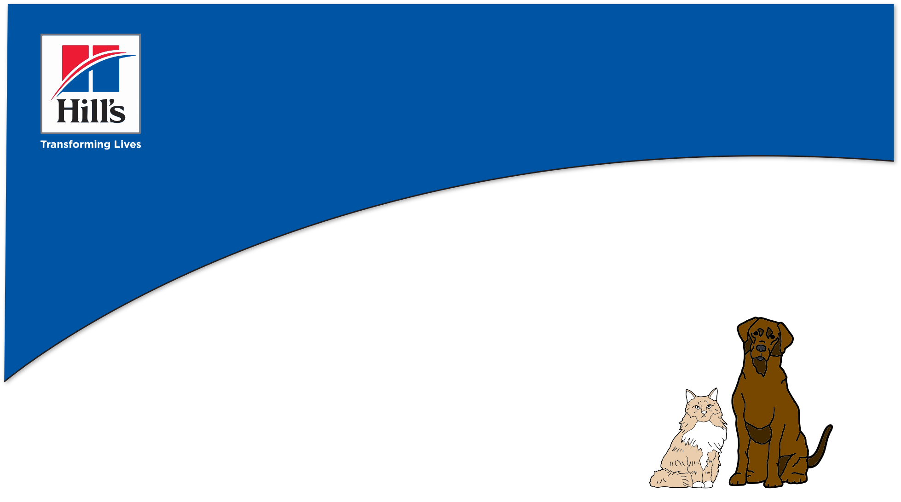
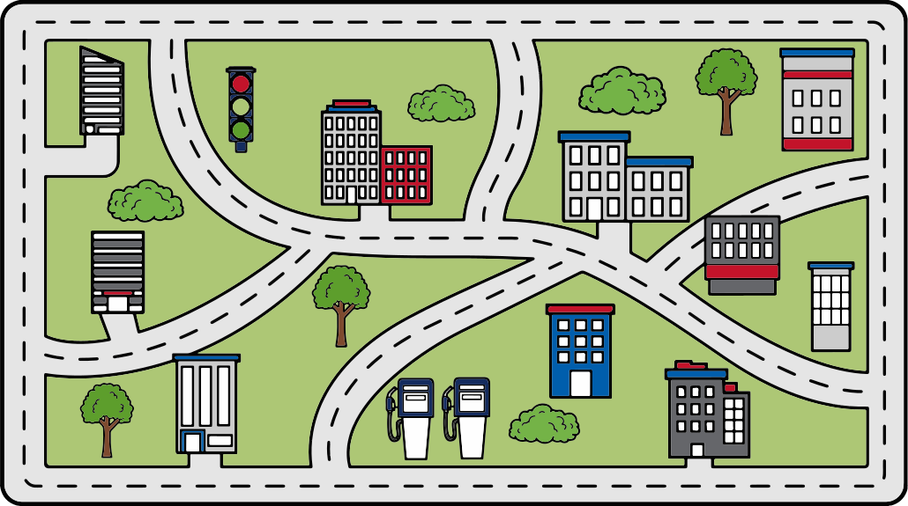
¡Fantástico!
Ayudaste a Faiza a maximizar su tiempo en ruta.
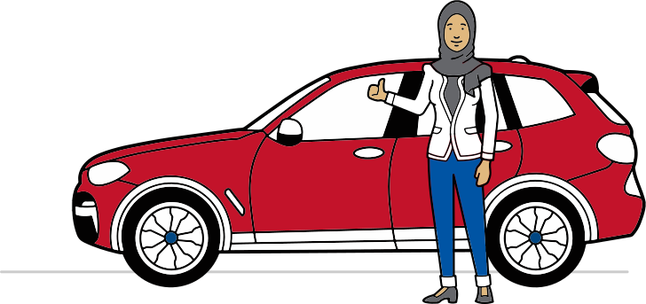
Inténtalo de nuevo.
Piensa en seleccionar a clientes que estén cerca unos de otros geográficamente.
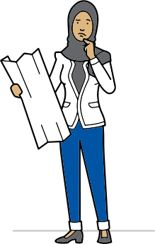
No precisamente.
Al planificar la ruta de visitas a los clientes que están cerca entre sí, Faiza puede dedicar más tiempo a hacer crecer su negocio con los clientes y pasar menos tiempo
en la ruta.
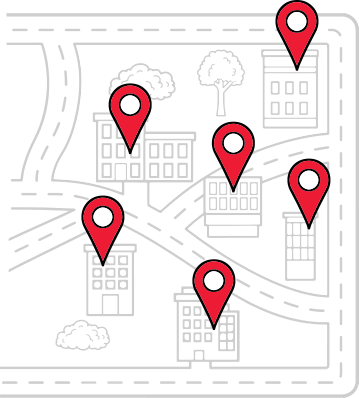
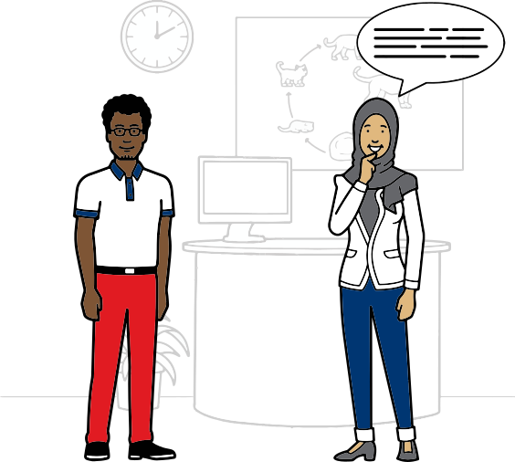
Faiza debe pedirle al cliente que realice lo siguiente:
Identifique a los nuevos pacientes que utilizarán el producto.
Pague.
Realice un seguimiento de los pacientes que han utilizado las muestras del producto.
Devuelva las muestras que no se hayan utilizado.
Acepte comprar las muestras del producto al final del mes.
¡Muy buen trabajo!
Ahora Faiza podrá maximizar su retorno de la inversión y mejorar los resultados del negocio.
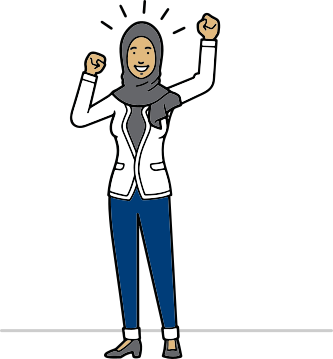
Buen intento.
Piensa en qué hará crecer una relación de negocios con el cliente.
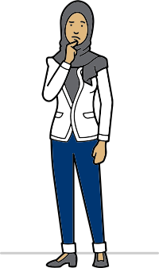
No precisamente.
Para maximizar el retorno de la inversión y hacer crecer el negocio, Faiza deberá pedirle al cliente que identifique a los nuevos pacientes que utilizarán el producto y que realice un seguimiento de los pacientes que han utilizado las muestras del producto.
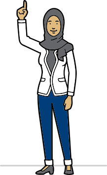
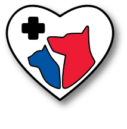
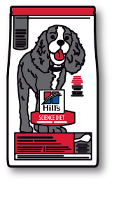
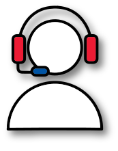
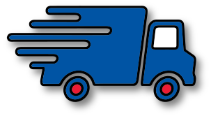
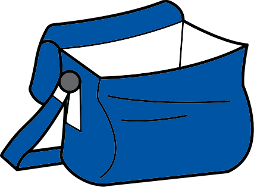
¡Genial!
Faiza sabe que puede ponerse en contacto con Atención al Cliente, Asuntos Veterinarios Profesionales, Servicios de Logística y gerentes regionales de Ventas para pedirles apoyo. También entiende que necesita conocer los productos y las marcas de Hill's.
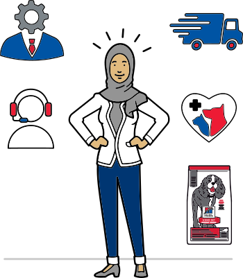
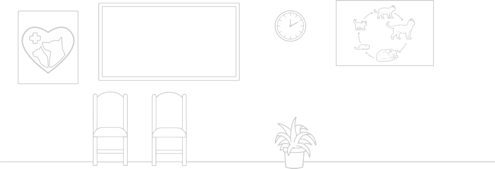
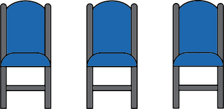
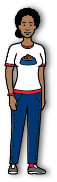
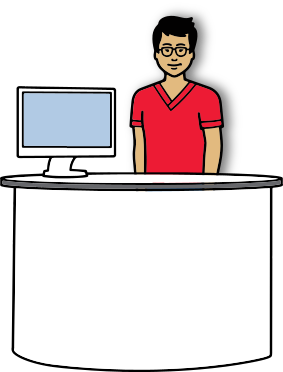
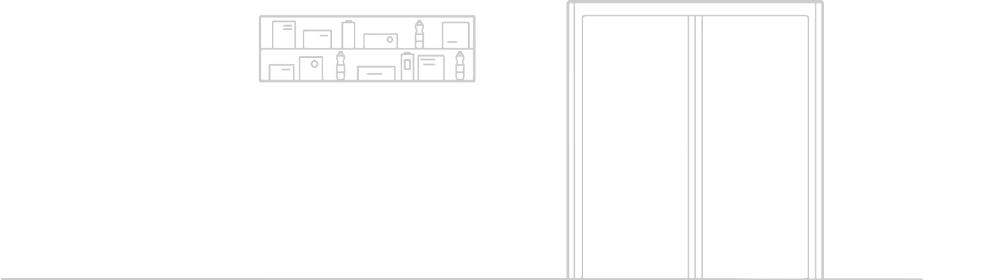
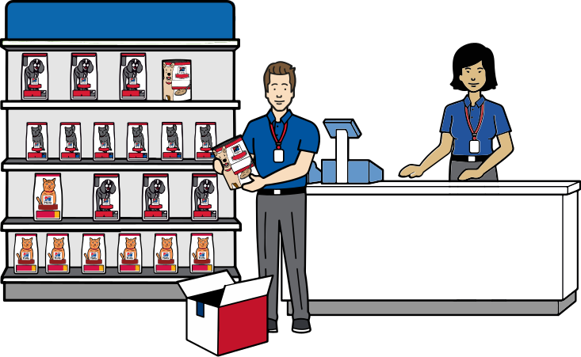
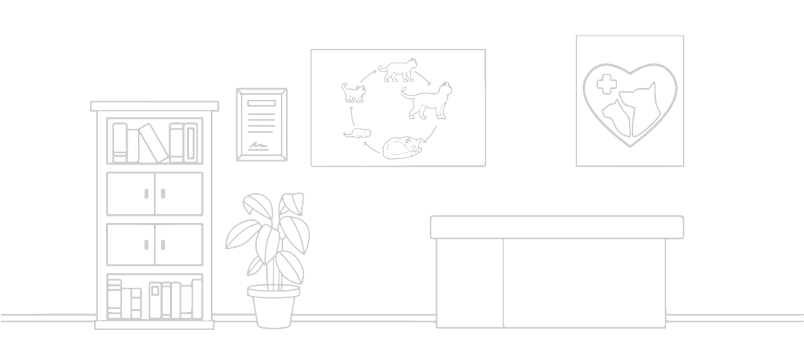
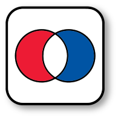
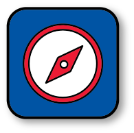
Identificar áreas de alineación
Faiza debe identificar áreas de alineación y desarrollar planes de negocio conjuntos. El modelo APE puede ayudar.
APE significa Analizar, Planificar y Ejecutar. Explicaremos esto con más detalle en un módulo posterior.
Dirigir la relación
Ella necesitará poner en marcha nuevas formas de liderazgo para construir y desarrollar una asociación con sus clientes e ir un paso adelante de sus competidores.
Signos de éxito
Si Faiza cumple de manera consistente con los fundamentos del compromiso del cliente, deberá ver los resultados en comentarios positivos del cliente y en las ventas.
¡Buen trabajo!
Ayudaste a Faiza a acceder a un encargado de la toma de decisiones clave y a continuar creando una asociación con este cliente.
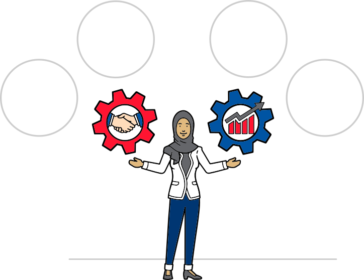
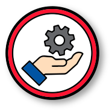
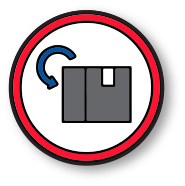
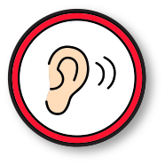
¡Buen trabajo!
Has identificado correctamente las actividades de la gestión de clientes y del desarrollo de clientes.
Inténtalo de nuevo.
Recuerda que las actividades de gestión de clientes son las operaciones cotidianas de un gerente de territorio. El desarrollo de clientes lleva estas relaciones al siguiente nivel.
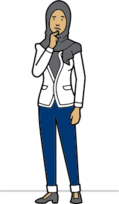
No precisamente.
La gestión de clientes incluye procesar pedidos y brindar servicio y soporte a los clientes. El desarrollo de clientes se enfoca en crear asociaciones y en concentrarse en el compromiso para convertirse en un asesor confiable.
Equilibrio, equilibrio, equilibrio
Recuerda que la clave para el equilibrio es el liderazgo personal. Pregúntate: "¿Cómo puedo marcar la diferencia con mis
clientes hoy?".
Debes enfocarte en proporcionar valor y en apoyar el éxito de los clientes. No se trata sólo de cuántas visitas hagas en un día, sino del impacto de las interacciones.
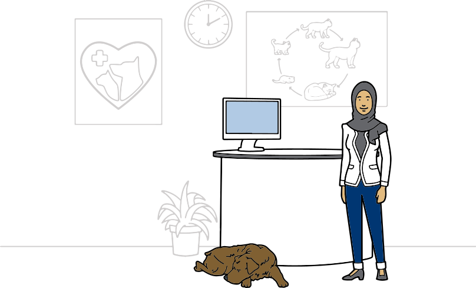
Volver al día siguiente
Dar seguimiento virtual
Volver la semana siguiente
Volver el mes siguiente
Volver en el siguiente ciclo
¡Correcto!
Puedes aprovechar las reuniones virtuales para hablar con un encargado de la toma de decisiones clave que no haya estado disponible.
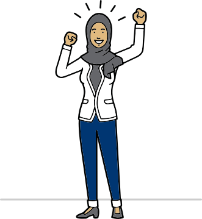
Inténtalo de nuevo.
Recuerda que tu ciclo de visitas se debe planificar con varias semanas de anticipación.
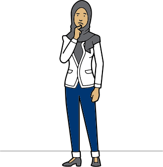
No precisamente.
Puedes programar una reunión para dar seguimiento virtual.
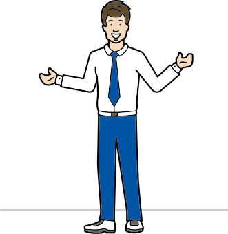
Aprovechar los análisis del negocio
Entender el entorno del mercado
Procesar pedidos
Volver el mes siguiente
Conocer a la competencia
¡Buen trabajo!
Esas son magníficas formas de convertirte en un asesor confiable.
Inténtalo de nuevo.
Recuerda que convertirte en un asesor confiable es una actividad del desarrollo de clientes. La gestión de clientes también es importante, pero estas tareas son más cotidianas.
No precisamente.
Aprovechar los análisis del negocio, entender el entorno del mercado y conocer a la competencia pueden ayudar a convertirte en un asesor confiable.
La cantidad de visitas que realizas
Dejar información sobre los productos
Proporcionar valor a los clientes
¡Correcto!
Proporcionar valor a los clientes y compartir su éxito es clave.
Inténtalo de nuevo.
El liderazgo personal marca la diferencia.
No precisamente.
Debes enfocarte en proporcionar valor a los clientes.
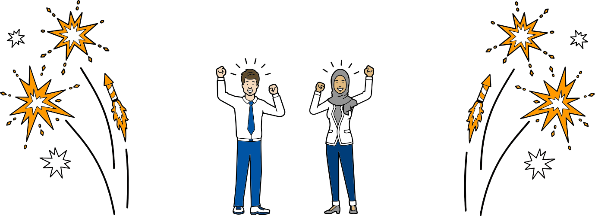
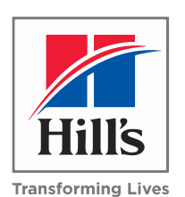
Sample
Header
SECTIONS